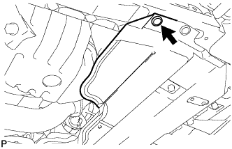
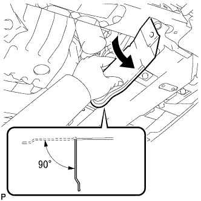
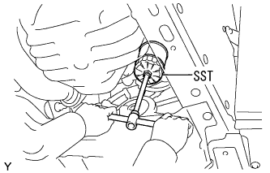

Oil Filter Element (2AZ-FE) Removal |
| 1. Drain Engine Oil |
Remove the drain plug and drain the engine oil.
After draining the oil, install the drain plug with a new gasket.
| 2. Remove Oil Filter Element Service Hole Cover |
 |
Remove the clip.
 |
As shown in the illustration, crease the service hole cover and open it.
| 3. Remove Oil Filter Sub-assembly |
 |
Using SST, remove the oil filter.